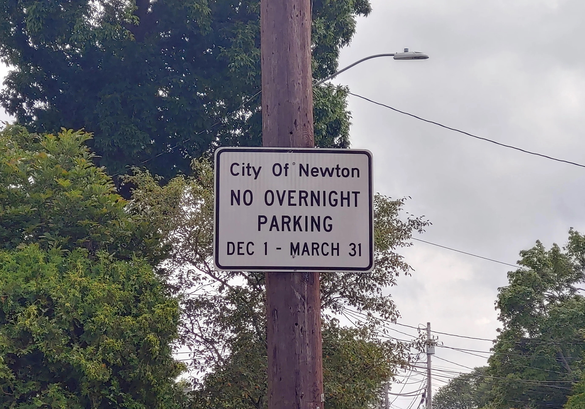

Our committee is dedicated to repealing Newton's overnight parking ban. We are a group of lifelong Newton residents who know that this parking ban is outdated, unnecessary, and exclusionary. After collecting 10,000+ signatures, a question to repeal the parking ban has made it onto the ballot — Newton is finally one step closer to being a more common-sense place. Please remember to vote YES on or before November 4, 2025!
Learn More and Frequently Asked Questions
Volunteer | Endorsers | Host a Yard Sign | Donate
Read our Op-Ed in Fig City News
Letter of Endorsement from Councilor Stephen Farrell
Watch our Interview On NewTV
Questions or comments? Email us at repealparkingban@gmail.com or call 617-644-6996
Make your voting plan!
Election Day:
Tuesday, November 4, 2025 7am-8pm
Early Voting Dates at City Hall:
Saturday October 25, 2025 11am-5pm
Sunday October 26, 2025 11am-5pm
Monday October 27, 2025 8:30am-8pm
Tuesday October 28, 2025 8:30am-5pm
Wednesday October 29 8:30am-5pm
Voter Registration Deadline:
The last day to register to vote is 5pm on October 25th.
Vote by Mail Application Deadline:
The last day to request a vote by mail application is 5pm on October 28th.
More info at the City of Newton's Election webpage
Frequently Asked Questions
- Why is the ban a big deal? Can’t those people who are affected just park in the municipal lots? And shouldn’t they have known what they were getting into when they moved here?
The ban is a big deal to many in Newton who have limited driveway space but need to accommodate, for example, multiple household members who drive to work or home health aides. Municipal lots are not a realistic option for families with children and are not present in every village. Additionally, circumstances can change – new job, growing family, unexpected disability – but this is no excuse to force people out of Newton. - What do the public works, fire, and police departments think about lifting the overnight parking ban?
At the February 22, 2023 Public Safety & Transportation Committee meeting, Public Works Commissioner Jim McGonagle, Fire Chief Greg Gentile, and Police Superintendent George McMains (now serving as Police Chief) all indicated that permanently lifting the overnight parking ban will not be detrimental to public safety. In other words, these departments have not objected to repealing the ban. They also expressed support for simply lifting the ban rather than a permit/waiver system. - I live on a tight street — won't this make my situation even worse?
We recognize that Newton has some narrow streets where parking regulation is needed to ensure safe passage. However, the overnight parking ban as a 'one-size-fits-all' policy is not the proper solution. For those streets where regulation is needed, specific regulations implemented can and should be implemented by the Traffic Council. This would actually be more effective, especially considering that if a street is too narrow, that is a year-round issue that deserves to be addressed with year-round regulations. Removing an unnecessary parking ban from streets where such a ban is not needed will also allow those streets where regulations serve an important public safety purpose to be prioritized for enforcement. - How will the streets be plowed?
Voting Yes keeps in place parking restrictions during snow emergencies, and violators would continue to be punished by tow. Newton's snow emergency ordinance prohibits parking "in such a manner as to impede the removal or plowing of snow or ice." Accordingly, the snow emergency ordinance enables DPW to flexibly ban parking in response to any plowable snow event, either during or after the storm, including from 2am-6am. Notably, unlike Boston and Cambridge, where snow emergencies are only in effect on certain main streets, in Newton snow emergencies apply citywide. - Where will people park during snow emergencies?
This proposal only affects those nights when there is no snow emergency declared. People with limited parking will continue to make arrangements for off-street parking during snow emergencies, for example by coordinating with neighbors, taking advantage of parking garages that are open to the public, or by simply lining their cars up in a narrow tandem driveway which would be impractical other nights of the year. - Won't this lead to influx of BC and Lasell students parking their cars on residential streets?
Neighborhoods near BC and Lasell already have robust parking regulations that are far more strict than the winter overnight parking ban. This proposal also does not prevent the Traffic Council from implementing further parking restrictions on specific streets. - What ordinances does Newton already have to ensure safe passage on our streets?
Newton has several safety-related parking ordinances which apply citywide:-
Snow emergency regulations (Sec. 19-225): When the City declares a snow emergency, no cars can be parked on the street and impede snow plows. This is a towable offense.
-
Abandoned vehicles (Sec. 19-242): Any car that remains parked for more than 72 hours is considered abandoned. This is a towable offense.
-
Parking far from the curb (Sec. 19-166(e)): No one can park their car more than 12 inches from the curb.
-
Parking without leaving enough room to pass: (Sec 19-219(a)(7)): No one can park their car without leaving a clear and unobstructed lane at least 10 feet wide for passing traffic. This is a towable offense.
-
- Why should we repeal the ban now? Is a yes vote reckless?
We see this campaign as a natural and reasonable progression. In 2019, the parking ban was shortened by 1 month without a problem. In 2020-2021, the ban was temporarily lifted with no adverse impacts, despite there being more cars in Newton during the pandemic with college students home, and cars moving less often due to restrictions and work-from-home. Additionally, most people already have the cars they need, so there is no reason to expect a major influx of cars into Newton after repealing the parking ban. - Isn't this bad for the environment?
One of the best ways to help the environment is to reduce “vehicle miles traveled”. We should make it easy for people who need to drive to move to and stay in Newton, where we benefit from compactness rather than sprawl, and the ability to live car-lite versus fully car-dependent. - Isn't repealing the parking ban unnecessary because people with hardships can already get exemptions?
Currently, the police department actually only gives very limited exemptions: typically only for a few nights and not the entire winter, and only in the most deserving of circumstances. The ordinance as written does not allow for any exemptions, and the Police Department General Orders require enforcement of the overnight parking ban, unlike any other parking ordinance, including those that are more important for safety. - Shouldn't we just create a waiver program rather than repealing the ban in its entirety?
It is correct that waivers for overnight parking would address the specific situations that many individuals face as a consequence of the overnight parking ban. However, this is not a practical or reasonable solution, because it would make the overnight parking ban twice as hard to enforce by adding a second step of verifying that a car has a valid waiver/permit. Making the ordinance harder to enforce will reduce its effectiveness. In order to preserve effective enforcement, it is necessary to have a minimal solution where there is no citywide parking ban, and parking is only banned on certain streets where it makes sense to do so. - What about developments with insufficient parking?
Where developments exist with insufficient parking, and whether they are either already built, or in the pipeline, those neighborhoods need a different solution than a winter parking ban. Assuming the winter parking ban stays in place as the 'solution' for those areas, there would almost certainly be spillover parking occurring anyway, whether from visitors parking on the street, or residents taking advantage of the unbundled parking to park on the street for 8 months of the year. So we must do that work to protect those neighborhoods no matter the outcome of the ballot question. And if the parking ban is repealed, that will finally cause the City Council to act towards something better, rather than continuing to do nothing.